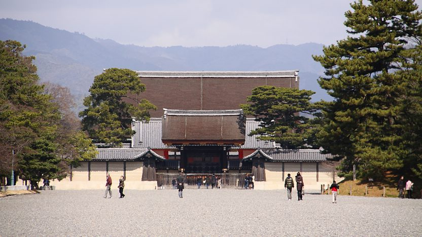
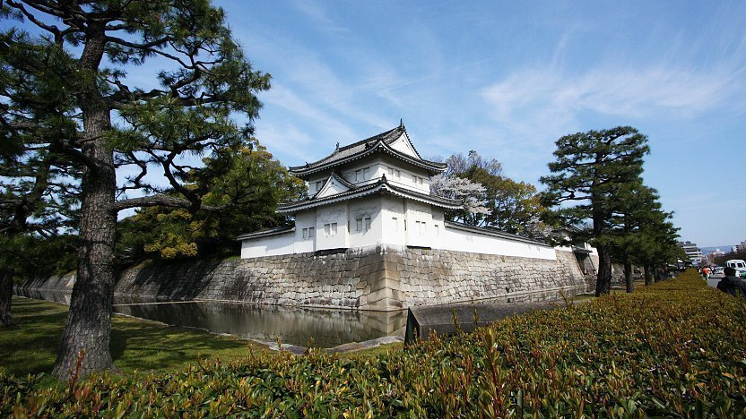
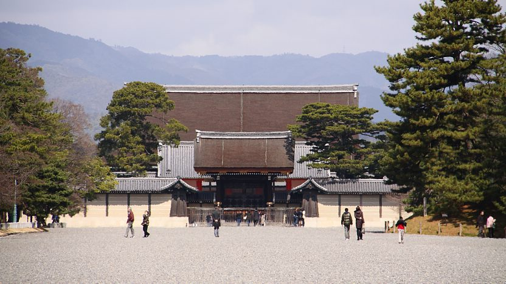
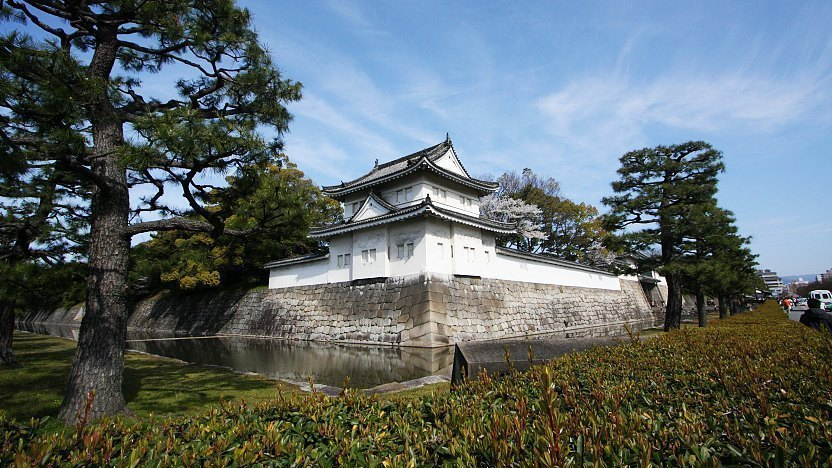

Kyoto
 



Introduction
From 794 until 1868, Kyoto was both the emperor's home and the capital of Japan. With a population of 1.5 million, it is one of the ten largest cities in the nation and has a contemporary appearance.
Kyoto was decimated over the years by numerous battles and fires, but because of its outstanding historic importance, the city was removed from the list of cities to be hit by the atomic bomb and survived World War II. The city still contains countless temples, shrines, and other priceless historical buildings.
Kyoto Station
The Kyoto Station building was erected to commemorate the 1200th anniversary of the founding of Kyoto as the nation's capital. It was made available to the public in 1997 and is a stark contrast to how many Western visitors perceive Kyoto to be the centre of traditional Japanese culture.
The structure's cutting-edge layout was created by Japanese architect Hara Hiroshi. It makes an effort to portray historical Kyoto using a contemporary aesthetic. The Matrix, the station's spacious main hall with an exposed steel beam canopy, was designed to mimic both the station's architecture and Kyoto's street system's grid pattern. The Osaka Umeda Sky Building was also created by Hara.
Nijo Castle
As the Kyoto home of Tokugawa Ieyasu, the first shogun of the Edo Period (1603-1867), Nijo Castles was constructed in 1603. The castle's palace structures were finished by his grandson Iemitsu 23 years later, and he also added a five story castle keep to the property.
Nijo Castle was used as an imperial palace for a while following the fall of the Tokugawa Shogunate in 1867 before being given to the city and made accessible to the general public as a historical site. The castle was listed as a UNESCO World Heritage Site in 1994 because of its palace structures, which are undoubtedly the best surviving examples of feudal Japanese castle architecture.
Summary
Kyoto is committed to upholding Japan's oldest customs while yet being a vibrant, modern city. Because modern facilities are easily accessible, Kyoto is the ideal place for travellers who want to learn about Japan's past without giving up modern luxuries. Kyoto is proud to serve traditional Japanese cuisines like sushi, tofu, and obanzi (Kyoto home-style food), and is regarded as a national eating hotspot. Additionally, a wide range of eateries provide anything from French fare to Korean barbeque. Shopping in Kyoto is also a distinctive experience, with goods ranging from cutting-edge fashion to traditional Japanese crafts produced by regional craftspeople. Kyoto is one of Japan's most cherished assets, second only to the most glittering locations on earth.